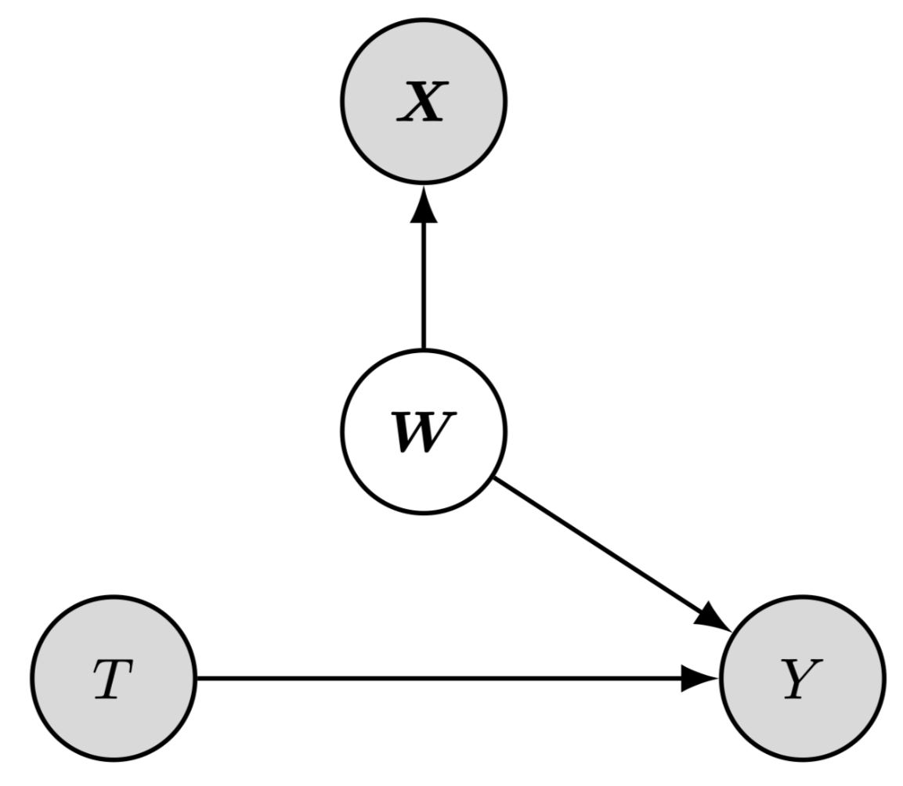
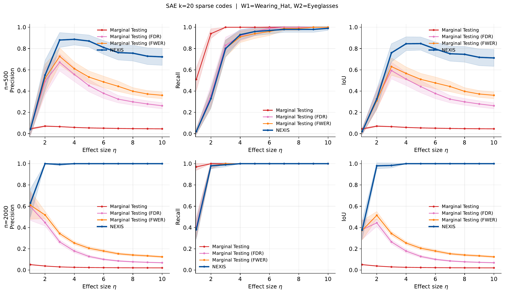
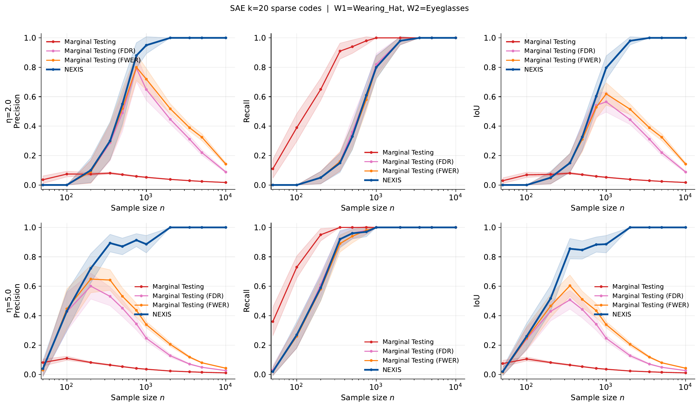
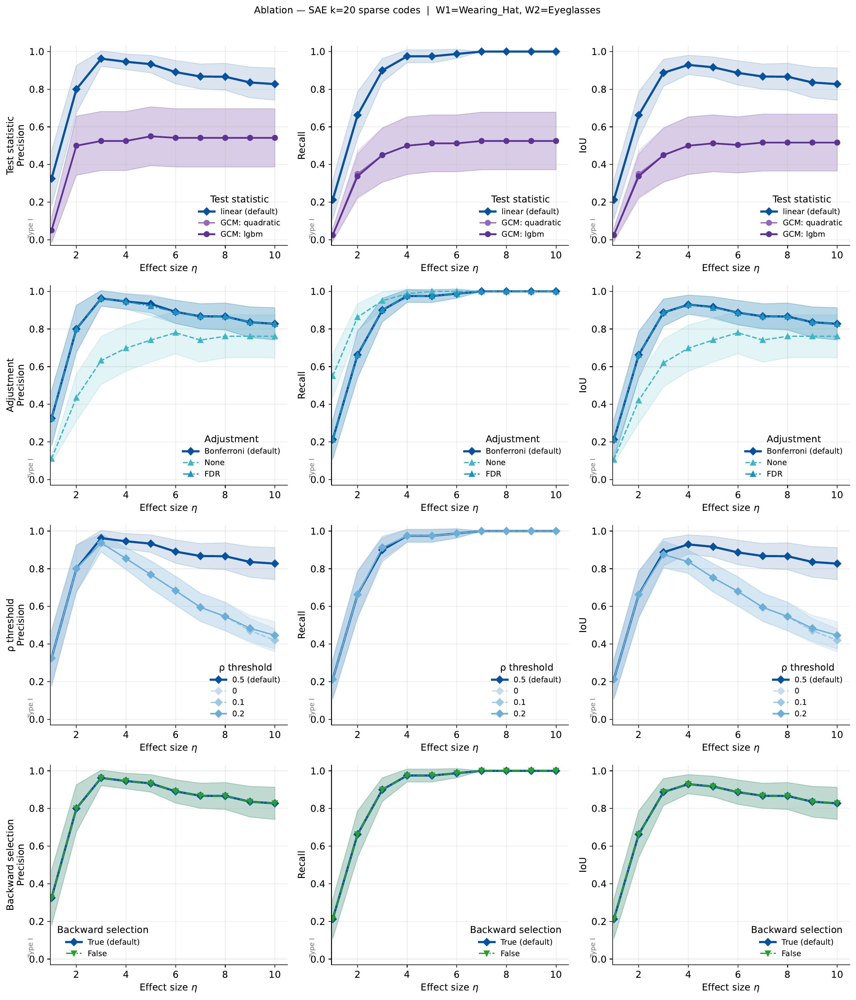
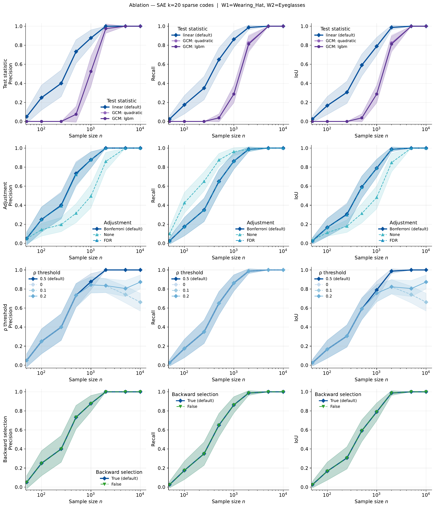

From Tokens to Policy:
Causal and Interpretable Heterogeneous
Treatment Effects Identification

Abstract
Heterogeneous Treatment Effect (HTE) identification is crucial to explain the impact of an intervention and optimize our policies accordingly. Existing approaches trade expressivity for interpretability, but as long as some active heterogeneity drivers are unmeasured, both ends of this spectrum allow for spurious HTE characterization with no causal reading.
We focus on controlled experiments and argue that the oracle causal characterization via the direct effect modifiers is now within reach, thanks to (i) more extensive pre-treatment measurements, e.g., multi-modal, and (ii) representation learning pipelines to scale their analyses. We re-frame HTE identification as a Markov-blanket discovery problem on a sufficient and aligned pre-treatment representation, and introduce Neural EXposure Interaction Search (NEXIS), an iterative procedure with provable and empirically validated consistent selection.
We deploy NEXIS on two anti-poverty programs in Africa, augmenting each with satellite imagery capturing previously unmeasured environmental effect modifiers, leading to novel interpretable and prescriptive guidelines to optimize the programs' next iterations.
Method
From Tokens to Policy — a four-step cycle
- Foundation model + SAE — Pre-treatment observations (satellite imagery, structured covariates) are encoded by a frozen foundation model, then decomposed by a learned Sparse Autoencoder into a dictionary of interpretable atoms, each aligned with a latent factor of variation.
- NEXIS — A forward-backward Markov-blanket discovery procedure that iteratively selects atoms with independent residual heterogeneity signal and prunes redundant ones. Unlike marginal screening, NEXIS avoids the Experimental Power Paradox: more data never degrades precision.
- VLM interpretation — Each retained atom is labelled post-hoc by contrasting its top- and bottom-activating tiles with a vision-language model (Qwen2.5-VL-72B), translating latent factors into human-readable descriptions for policy guidance.

Causal model and effect modification taxonomy (VanderWeele & Robins 2007). Shaded: observed; white: latent. Wdir are the direct effect modifiers; NEXIS identifies their principal proxies in the learned dictionary Z = ψ(X).
CelebA Semi-Synthetic Benchmark
The Experimental Power Paradox
We construct a semi-synthetic RCT benchmark on CelebA with |S*| = 2 known direct modifiers (wearing a hat, wearing eyeglasses); pre-treatment information is face images only. A trained SAE (m = 13,824 codes) on SigLIP representations provides the candidate dictionary.

Precision · Recall · IoU of S* recovery as effect magnitude η increases (n fixed). Rows: four DGP conditions; columns: three metrics. NEXIS converges; marginal screening diverges.

Precision · Recall · IoU as sample size n increases (η fixed). Larger n makes precision collapse worse for marginal screening; NEXIS is unaffected.

Ablation across NEXIS design choices (SAE sparsity, test, correction, ρ, backward step) under increasing effect magnitude. The linear test with FWER and ρ = 0.5 is the recommended default.

Same ablation under increasing sample size. Results are consistent across settings.
Application 1 — Uganda
Youth Opportunities Program (YOP, 2008)
YOP awarded cash grants to self-organised youth groups across 439 groups in 331 communities in post-conflict Northern Uganda, randomized to measure impact on productive economic capacity. We extend the original trial by pairing it with Landsat-7 multispectral imagery (2005–2007 composite, pre-program), embedded via the Prithvi-EO geospatial foundation model, and summarised with a learned SAE dictionary. NEXIS selects from the pooled candidate set of 170 landscape atoms, spectral indices, and demographic covariates.
An earlier satellite-based analysis by Jerzak et al. (2023) found preliminary heterogeneity signal but was limited to binary image clustering and a single marginal investigation. NEXIS conditions each forward step on already-selected features, resolving the entanglement.
Trial communities
422 geolocated households across Northern Uganda, colored by linguistic group (a discovered direct modifier for skilled employment).
Discovered direct modifiers

Satellite-derived direct modifiers of skilled employment.

Satellite-derived direct modifiers of log business assets.
| Modifier | GATE active | GATE inactive | Δ | p-value |
|---|---|---|---|---|
| Panel A: Skilled Employment | ||||
| Language group | ||||
| Teso | −0.030 (0.060) | +0.372 (0.022) | −0.403 (0.063) | 7.7×10−10 |
| Acholi | +0.092 (0.061) | +0.347 (0.023) | −0.255 (0.065) | 1.6×10−5 |
| Karamojong | +0.674 (0.058) | +0.288 (0.022) | +0.386 (0.062) | 6.3×10−8 |
| Satellite atoms | ||||
| Perennial river presence | +0.089 (0.098) | +0.330 (0.021) | −0.242 (0.100) | 2.1×10−4 |
| Vegetation spatial heterogeneity | +0.214 (0.038) | +0.373 (0.025) | −0.159 (0.045) | 6.7×10−5 |
| Panel B: Log Business Assets | ||||
| NDVI (vegetation greenness) | +0.668 (0.061) | +0.552 (0.068) | +0.115 (0.092) | 5.6×10−5 |
| Structured agricultural landscape | +0.368 (0.094) | +0.649 (0.051) | −0.282 (0.107) | 1.7×10−2 |

Trial communities by district.

Linguistic-group heterogeneity in skilled employment.
Skilled employment — Outside-option logic: Karamojong speakers (marginalized pastoralists, GATE +0.674) show the highest impact; Teso and Acholi communities, already affording productive pathways, exhibit dampened effects. Perennial river presence and vegetation heterogeneity dampen impact by enabling subsistence fishing or bush/crop alternatives. Business assets — High NDVI (productive green land) amplifies impact; structured commercial-scale agriculture dampens returns, consistent with Crépon et al. (2013) and Egger et al. (2022) crowding-out.
Application 2 — Ghana
Livelihood Empowerment Against Poverty 1000 (LEAP 1000, 2015–2017)
LEAP 1000 provided quarterly cash transfers to extremely poor households with newborns across 2,331 households in 162 communities in Northern and Upper East Ghana. The overall difference-in-differences ATE is +7.35 GH₵/month on adult-equivalent consumption expenditure. We extend the analysis with Landsat-8 imagery (2015), embedded via Prithvi-EO, pooled with 24 survey covariates and spectral indices. NEXIS selects from 155 candidates.
Study region
Northern Ghana — the 5 LEAP districts span the Northern, North East, and Upper East regions (East Mamprusi, Karaga, Yendi, Bongo, Garu-Tempane).
Discovered direct modifiers

Left: Satellite-derived direct modifiers retained by NEXIS on LEAP 1000, with VLM interpretations from top/bottom activating Landsat tiles. Right: Temporal evolution for waterway-active communities (2015→2017), showing cropland extension — supporting the water-complementarity hypothesis.
| VLM label | GATE (active) | GATE (inactive) | Δ | NEXIS p |
|---|---|---|---|---|
| Ephemeral waterways | +42.9 (14.9) | +6.0 (1.0) | +36.9 | 2.1×10−8 (0.013) |
| Closed-canopy forest | +56.2 (20.8) | +6.4 (1.0) | +49.8 | 3.7×10−7 (0.005) |
Marginal GATE estimates for all 144 SAE-derived candidate features (gray), with the two NEXIS FWER discoveries highlighted (colored). The vast majority of high-GATE features are correlated proxies of the two direct modifiers.
The interpretation is complementarity-based (de Janvry & Sadoulet 2006): water-adjacent smallholders can direct transfers into irrigation-season agriculture, while forest-edge households layer cash onto existing non-timber livelihood strategies unavailable elsewhere. Cropland expansion and denser riparian vegetation tracked from 2015 to 2017 (VLM temporal analysis) further support the waterway hypothesis. No demographic discovery is itself informative: LEAP 1000's strict targeting already selects a highly homogeneous population where residual heterogeneity is environmental.

Marginal screening vs. NEXIS: NEXIS selects the minimal causal set (2 features); marginal screening accumulates many correlated proxies — another instance of the Experimental Power Paradox.
Citation
@article{cadei2025nexis,
title = {From Tokens to Policy: Causal and Interpretable
Heterogeneous Treatment Effects Identification},
author = {Cadei, Riccardo and Otchere, Frank and Tirivayi, Nyasha and
Tagliaferro, Gustavo Angeles and Bargagli-Stoffi, Falco J.
and Locatello, Francesco},
year = {2025},
note = {Preprint}
}